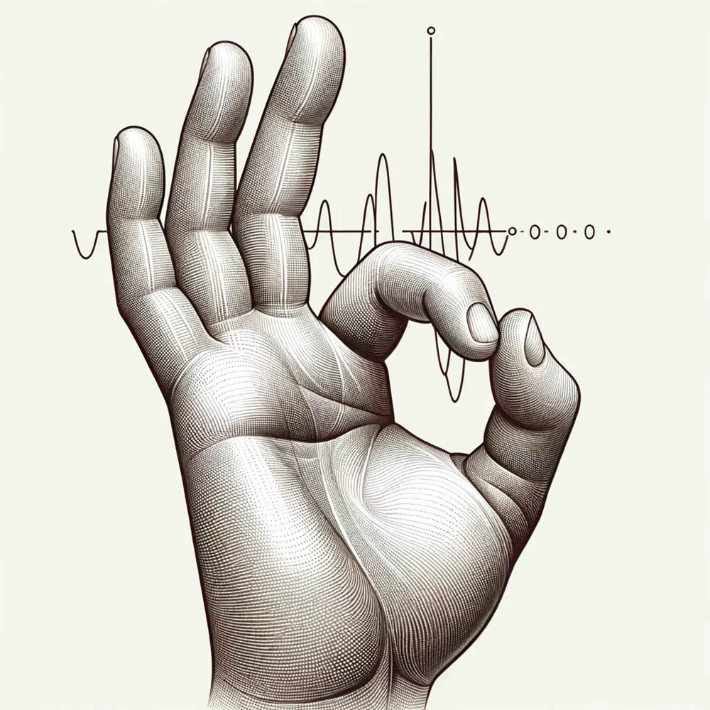
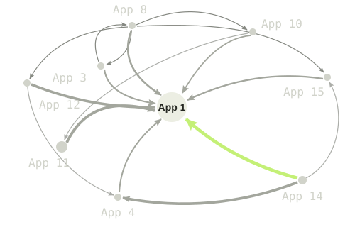
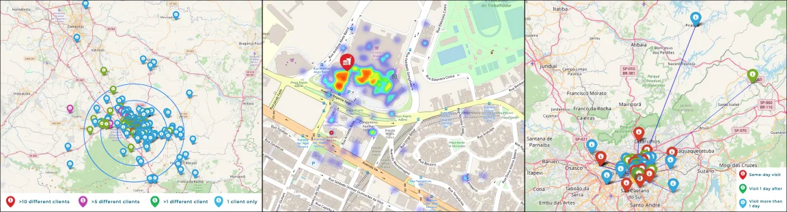

Data scientist and consultant
Eduardo Furtado
I help teams decide what to do when the answer isn’t obvious. We define the problem together, test possible solutions with data, and measure what works in practice. I bring nearly a decade of experience in data science, analytics, and management consulting. My master’s focused on applying AI in healthcare.
Selected work
All projects
Clinical research
Hand tremor assessment from video
Extracting movement features from finger-tapping videos to classify tremor severity.
TensorFlow

Product analytics
How people move between app features
Mapping transitions between features to see which paths users follow and which features they rarely visit.
NetworkX / Pyvis

Location analytics
Mapping customer travel patterns
Measuring how far shoppers traveled and when they visited after claiming a coupon.
Folium

Retail analytics
Which stores do shoppers visit together?
Finding frequent store pairs in purchase records from shopping mall campaigns.
Apriori
Background
Education
- Master of Science Federal University of the State of Rio de JaneiroResearch on AI for clinical assessment of hand tremors
- B.Sc. in Information Systems Fluminense Federal University
Interests
- AI and deep learning
- Data science and analytics
- Data-driven problem solving
- AI in healthcare